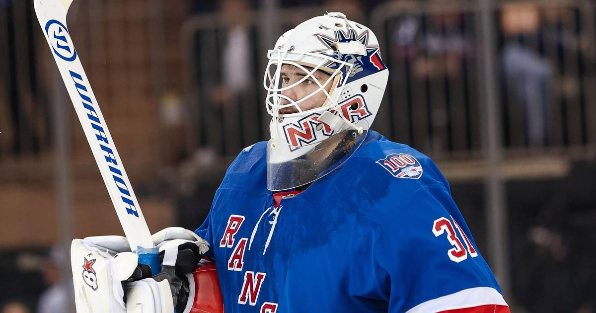

Shesterkin out for season after lower-body injury in Washington
Igor Shesterkin is out for the season after jamming his right leg into the goalpost in Washington — the Rangers' worst-case scenario, confirmed Saturday.

Disclosure: this post contains affiliate links. I earn a commission on qualifying purchases.
# Shesterkin out for season after lower-body injury in Washington
The New York Rangers' nightmare scenario is real: Igor Shesterkin will miss the remainder of the season with the lower-body injury he suffered Friday night in Washington, the team confirmed Saturday.
How it happened
With 11:40 left in the second period of Friday's game at Capital One Arena, Shesterkin came well out of his crease to challenge Pierre-Luc Dubois during a Capitals power play. As the play scrambled back behind his net, he jammed his right leg into the goalpost, his lower body contorting awkwardly as the post refused to come off its mooring. He was helped to the dressing room by teammates, unable to put any weight on his right leg.
Game: Rangers at Capitals, Friday Oct. 9
Injury: Lower body — jammed right leg into goalpost
Season record: 3-1, .926 SV%, 1.75 GAA
Cap hit: $11.5 million — the NHL's highest-paid goaltender
The fallout
The Rangers lost the game 3-1 — Boone Jenner's tiebreaker at 17:38 of the second (his first goal as a Capital) decided it, with Timothy Liljegren also scoring his first with Washington and Tom Wilson icing it into the empty net. The defeat snapped a four-game Rangers win streak.
Coach Mike Sullivan had no update Friday night. By Saturday, the picture was grim: per the NY Post, the $92 million goaltender is done for the season, with backup Dylan Garand now the last line of defense and Joonas Korpisalo expected to miss another four weeks.
Sources
• Russian Machine Never Breaks — Shesterkin injury
• WIXX — NHL roundup: Capitals win as Rangers' Shesterkin injured
• Sportsnet — Rangers goalie Igor Shesterkin out for season
• NY Post — Shesterkin out for season after scary injury
Watch
Source: Rangers vs. Capitals | NHL Highlights | Oct 9, 2026, from the NHL — full-game highlights including Alexis Lafrenière's Rangers goal and Boone Jenner's first goal as a Capital.
Gear up: [Fanatics](https://fanatics.93n6tx.net/WOLjqe) via Fanatics